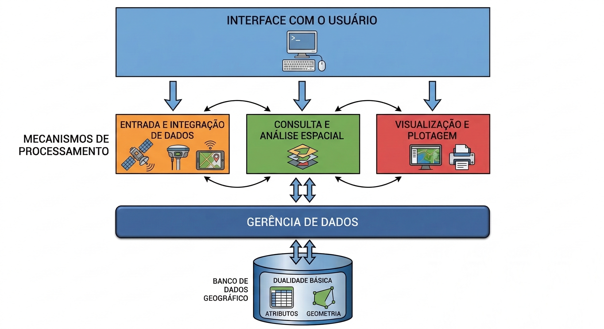

2 Conceitos: quem é quem no mundo “geo”?
A compreensão contemporânea do espaço geográfico e sua representação digital exigem uma análise de um ecossistema terminológico que, embora compartilhe a raiz comum do estudo da Terra, apresenta distinções ontológicas, epistemológicas e instrumentais significativas. O advento da era digital transformou a cartografia analítica em um campo vasto e interdisciplinar, onde a geoinformática, a geomática, o geoprocessamento, as geotecnologias, a ciência de dados espaciais e a GIScience (Ciência da Informação Geográfica) se entrelaçam em uma rede complexa de significados.
A coexistência de múltiplas terminologias gera ambiguidades conceituais que afetam tanto a produção acadêmica quanto a aplicação técnica em órgãos governamentais e empresas. Pesquisas indicam que as preferências terminológicas variam conforme a localização geográfica e a tradição acadêmica; a geomática possui forte influência francesa e canadense, enquanto a geoinformática predomina na literatura europeia central e alemã. No Brasil, os conceitos de geoprocessamento e geotecnologias possuem definições que muitas vezes se sobrepõem erroneamente em editais e publicações técnicas, dificultando a distinção entre o processamento analítico e o conjunto instrumental de suporte.
Este texto explora cada um desses conceitos, detalhando suas origens etimológicas, suas evoluções históricas, as nuances que os distinguem e a estrutura hierárquica que define sua aplicação no monitoramento e na gestão do mundo físico.
2.1 Geoinformática
A identidade conceitual da geoinformática está enraizada em sua etimologia, o termo “Geoinformática” é um neologismo composto pelo prefixo grego geo- ($\gamma \tilde{\eta}$), que significa “Terra”, e pelo substantivo “Informática”. Este último termo é, por sua vez, uma aglutinação de “Informação” e “Automática”, sugerindo o processamento automatizado da informação. Assim, a geoinformática é, em sua essência, o tratamento automático de informações relativas à Terra. O termo foi introduzido por Samuelson em 1988, na Suécia (Krawczyk (2022)).
Na literatura formal, a geoinformática é definida como a ciência e tecnologia que lida com a estrutura e o caráter da informação espacial, sua captura, classificação, armazenamento, processamento e disseminação (Olędzki; Kwiatkowska (2004)). Mais recentemente, a geoinformática foi redefinida como uma ciência técnica dentro da Ciência da Computação, focada na programação de aplicações, estruturas de dados espaciais e análise de objetos e fenômenos espaço-temporais, incluindo o desenvolvimento de serviços web para modelagem espacial (Krawczyk (2022)).
Esta definição contemporânea reflete a evolução do conceito desde sua origem, posicionando a geoinformática como uma ponte entre as geociências e a ciência da computação. Nessa perspectiva, a geoinformática não se limita ao uso de ferramentas prontas, mas se dedica à criação de novas estruturas de dados, algoritmos e arquiteturas computacionais para lidar com a complexidade dos fenômenos espaço-temporais.
A visão de longo prazo para a área é a construção de sistemas de dados altamente interconectados, povoados com dados de qualidade e livremente disponíveis, acompanhados de um conjunto robusto de softwares para análise, visualização e modelagem (Brady; Sinha; Gundersen (2007)).
Historicamente, o termo geoinformática ganhou força na Europa, especialmente na Alemanha.No Brasil, a introdução desse conceito ocorreu impulsionada pelo Instituto Nacional de Pesquisas Espaciais (INPE), que inclusive organiza periodicamente, desde 1999, o Simpósio Brasileiro de Geoinformática (GeoInfo).
O protagonismo do INPE na consolidação da geoinformática no Brasil vai além da organização do GeoInfo. O Instituto tem contribuído ativamente para o desenvolvimento tecnológico da área, com iniciativas como o SPRING, um software de Sistema de Informação Geográfica, e o e desenvolvimento da TerraLib, biblioteca de código aberto para suportar aplicações em Geoinformática que resultou no software TerraView. Mais recentemente, projetos como o Brazil Data Cube exemplificam a vanguarda da pesquisa brasileira em geoinformática, aplicando tecnologias de big data, aprendizado de máquina e análise de séries temporais de imagens de satélite para produzir informação oficial sobre desmatamento, queimadas e uso e cobertura da terra para o governo brasileiro. Atualmente, a Divisão de Observação da Terra e Geoinformática do INPE segue coordenando projetos que posicionam o Brasil na fronteira do conhecimento da área.
2.2 Geomática
O conceito de Geomática representa um dos primeiros e mais robustos esforços de unificação terminológica no campo geoespacial. Sua origem remonta ao final da década de 1960, quando o franco-canadense Bernard Dubuisson, cientista com formação em agrimensura e fotogrametria, propôs o termo “géomatique” para refletir as profundas transformações que as profissões de agrimensor e fotogrametrista começavam a experimentar diante do avanço da automação e da computação. Dubuisson criou o neologismo ao propor a junção do prefixo “geo” (referência à Terra) com o sufixo “matique” , extraído da palavra “informatique” (informática em francês), com o objetivo de designar de forma integrada as então distintas disciplinas de aquisição e processamento de dados da Terra sob um novo paradigma tecnológico. A palavra “géomatique” foi posteriormente anglicizada para “Geomatics” e oficialmente adotada no Canadá, especialmente na década de 1980 e 1990, como parte de uma reforma educacional e profissional para modernizar e unificar as áreas de agrimensura, cartografia e topografia sob um novo paradigma tecnológico (Krawczyk (2022)).
A geomática representa um campo de atividades científicas, tecnológicas e artísticas que, por meio de uma abordagem sistêmica e integrada, se dedica à aquisição, medição, análise, gestão, armazenamento e disseminação de dados e informações geoespaciais. Tem raízes fortes na engenharia, particularmente na agrimensura, cartografia e geodesia. Krawczyk (2022) situa sua origem como uma tentativa de modernizar e ampliar o escopo da geodésia, focando no processo completo de gerenciamento da informação espacial, desde a coleta em campo até a entrega ao usuário.
A definição formal adotada pela série de normas ISO/TC 211 estabelece a Geomática como a disciplina preocupada com a coleta, distribuição, armazenamento, análise, processamento e apresentação de dados geográficos ou informação geográfica (Brodeur (2001)).
A Geomática é frequentemente descrita como um termo guarda-chuva que inclui ferramentas e técnicas variadas, desde a agrimensura terrestre clássica até o sensoriamento remoto aéreo e orbital, sistemas de posicionamento global (GNSS) e cartografia náutica (Krawczyk (2022)). De acordo com a redefinição proposta por Krawczyk (2022), a Geomática deve ser situada no âmbito das Ciências da Terra em conexão com as ciências técnicas, tendo como objetivo principal o desenvolvimento de métodos e técnicas para a aquisição e gestão de dados espaciais relacionados à superfície terrestre, visando a modelagem e visualização de fenômenos espaço-temporais.
Em termos de aceitação global, a Geomática é o termo preferencial no Canadá, na Austrália, na Nova Zelândia e na França.Nesses países, o termo é amplamente utilizado em nomes de departamentos universitários, conselhos profissionais e órgãos governamentais.No entanto, nos Estados Unidos, o termo encontrou resistência, sendo muitas vezes preterido por GIScience.
Essa distribuição geográfica de uso reflete diferentes tradições acadêmicas e percursos históricos. Enquanto no Canadá e na França a adoção do termo esteve ligada a políticas explícitas de modernização profissional e educacional, nos Estados Unidos a preferência por GIScience (Ciência da Informação Geográfica) evidencia uma tradição de maior ênfase nos fundamentos teóricos e cognitivos da informação geoespacial, em detrimento da abordagem mais voltada à engenharia de agrimensura característica da geomática. Essa tensão terminológica, longe de ser um problema, demonstra a riqueza e a complexidade do campo, que comporta múltiplas perspectivas igualmente legítimas para o estudo do espaço geográfico.
2.3 GIScience / Ciência da Geoinformação
A expressão GIScience (Geographic Information Science) pode ser interpretada literalmente como “ciência da informação geográfica”, ou seja, o estudo científico da informação associada à localização e aos processos espaciais. Na América Latina, e em particular no Brasil, a literatura acadêmica frequentemente utiliza a expressão “Ciência da Geoinformação”, adotada por autores como Câmara; Monteiro (2001), como tradução conceitual próxima à GIScience.
A GIScience constitui um campo científico dedicado ao estudo sistemático da informação geográfica, de suas propriedades, métodos de representação e processos de análise (Longley et al. (2015)). Essa interpretação converge com a definição apresentada por Câmara; Monteiro (2001), segundo a qual um dos problemas fundamentais da ciência da geoinformação consiste no estudo e na construção de modelos computacionais destinados à representação do espaço geográfico.
O termo GIScience foi introduzido no início da década de 1990 pelo estadunidense Michael F. Goodchild para designar o conjunto de questões científicas fundamentais relacionadas às tecnologias de informação geográfica, particularmente aos Sistemas de Informação Geográfica (GIS) (Goodchild (1992)). A formulação de Goodchild representou a transição de uma abordagem predominantemente tecnológica, centrada em sistemas computacionais de manipulação espacial (software), para uma abordagem científica (teoria) voltada à investigação dos fenômenos relacionados à informação geográfica (Goodchild (1992)). Enquanto o SIG foca no “como fazer”, a GIScience foca no “o que sabemos” e em como a informação geográfica representa fenômenos do mundo real e a percepção humana.
A GIScience ou Ciência da Geoinformação não é somente o estudo de mapas digitais. É uma área independente que examina a natureza fundamental do espaço geográfico e do tempo, a cognição humana e os métodos computacionais necessários para capturar essa realidade complexa (Câmara; Monteiro (2001)). Ela se diferencia do SIG por sua natureza reflexiva e investigativa, buscando leis e princípios universais que governem a informação geoespacial (Longley et al. (2015)).
Em um panorama geral, o termo GIScience é o mais consolidado nos Estados Unidos. Sua adoção foi impulsionada pela necessidade dos geógrafos estadunidenses de afirmar a legitimidade científica de suas pesquisas frente à computação (Goodchild (1992)). O termo é amplamente utilizado em departamentos de geografia e pela UCGIS (University Consortium for Geographic Information Science, National Research Council (2006)).
2.4 Geoprocessamento
O termo geoprocessamento deriva da combinação de dois componentes. O prefixo “geo” provém do grego, que significa Terra. Já o termo “processamento” tem origem no latim processus, que significa avançar ou realizar operações em sequência. Assim, o significado literal de geoprocessing é “processamento de dados relacionados à Terra”.
Na América do Norte e na maioria dos países europeus, o termo geoprocessamento é geralmente empregado em um sentido operacional mais específico. Ele se refere principalmente a ferramentas computacionais realizadas em ambientes de software de SIG. “Geoprocessing” é utilizado como um termo técnico por profissionais da área, particularmente por aqueles inseridos no ecossistema Esri, para descrever automação e fluxos de trabalho de modelagem geoespacial. Na literatura acadêmica, discussões conceituais mais amplas tendem a preferir termos como GIScience, geoinformática ou geomática.
No Brasil e em outros países da América Latina, o termo “geoprocessamento” passou a ser amplamente adotado a partir da década de 1990, em grande parte influenciado pela tradição acadêmica estabelecida pelo INPE. Os livros do INPE organizados por Câmara, Davis e Monteiro e o desenvolvimento do software SPRING, acrônimo para “Sistema de Processamento de Informações Georeferenciadas”, contribuiram para institucionalizar o geoprocessamento como uma disciplina científica própria e desempenharam um papel central na difusão do termo na literatura em língua portuguesa e nos currículos acadêmicos. Nesse contexto, geoprocessamento é comumente utilizado como um conceito abrangente, que se refere a tecnologias e métodos voltados ao processamento de dados geoespaciais.
Na obra seminal “Introdução à ciência da geoinformação”, produzida pelo INPE no Brasil, Câmara; Davis; Monteiro (2001) apresentam uma definição que eleva o conceito para além de meras operações de software. Os autores definem geoprocessamento como uma tecnologia interdisciplinar que possibilita a convergência de diversas disciplinas científicas para o estudo de fenômenos urbanos e ambientais. Um entendimento fundamental da escola do INPE é que “o espaço funciona como uma linguagem comum” para diferentes campos do conhecimento; contudo, essa interdisciplinaridade é tecnicamente viabilizada por meio da redução de conceitos específicos de cada disciplina em algoritmos e estruturas de dados adequados ao tratamento computacional.
Segundo esses autores, geoprocessamento abrange a infraestrutura tecnológica e metodológica necessária para capturar, armazenar, processar, analisar e apresentar informações geográficas por meio de sistemas computacionais. Nesse quadro conceitual, os SIGs constituem a principal plataforma tecnológica para a implementação de operações de geoprocessamento, permitindo a integração de dados espaciais provenientes de múltiplas fontes e a automação de procedimentos analíticos (Câmara; Davis; Monteiro (2001)). Diferente do SIG (o sistema), o geoprocessamento é visto no Brasil como o campo técnico-científico que abrange a integração de diversas tecnologias, como o próprio SIG, o Sensoriamento Remoto, o GNSS e a Cartografia Digital.
2.5 Geotecnologia
O termo geotecnologia origina-se da combinação de expressões relacionadas às tecnologias geoespaciais e refere-se principalmente ao mercado tecnológico associado à aquisição e ao processamento de dados geoespaciais, e não a um campo de pesquisa científica. Essa interpretação destaca que geotecnologia descreve o ecossistema de soluções tecnológicas utilizado em atividades geoespaciais, incluindo equipamentos e sistemas projetados para aquisição e análise de dados.
O surgimento do termo está estreitamente associado aos desenvolvimentos da indústria geoespacial nos Estados Unidos, onde passou a ser amplamente utilizado no mercado de trabalho e no setor tecnológico para designar profissões e indústrias vinculadas ao processamento de dados geoespaciais. Nesse contexto, o conceito refere-se ao domínio econômico e tecnológico que abrange empresas que fabricam instrumentos e desenvolvem softwares e serviços para análise espacial e navegação (Gewin, 2004). Por exemplo, fabricantes de receptores GNSS, instrumentos de levantamento e sensores de sensoriamento remoto são frequentemente considerados parte do setor de geotecnologias (Gewin (2004)).
Devido a esse significado tecnológico e orientado ao mercado, o termo pode, por vezes, ser confundido com geotecnia, uma área da engenharia civil voltada à mecânica dos solos e à engenharia de fundações (e.g. Roberts (1977)). Essa similaridade terminológica pode levar a interpretações equivocadas, especialmente fora do campo das ciência da geoinformação. Como resultado, alguns autores argumentam que a expressão geotecnologia não é adequada para designar o campo científico dedicado aos estudos da informação geoespacial, uma vez que carece de uma conexão explícita com a teoria científica e pode se sobrepor à terminologia utilizada em outros domínios da engenharia (Krawczyk (2022)).
Em países de língua inglesa, particularmente nos Estados Unidos, o conceito está fortemente associado à indústria geoespacial e ao mercado de trabalho, sobretudo em discussões sobre carreiras e inovação tecnológica nos campos da geoinformação (Gewin (2004)). No Brasil e em outros países da América Latina, a forma plural “geotecnologias” é amplamente utilizada em contextos acadêmicos e aplicados para se referir, de forma coletiva, a tecnologias como SIG, sensoriamento remoto e navegação por satélite empregadas na análise geográfica. Apesar dessas variações regionais, o conceito refere-se de maneira consistente à infraestrutura tecnológica que sustenta a aquisição, o processamento e a aplicação de dados geoespaciais.
Dado vs. Informação
Os termos dado e informação são frequentemente utilizados como sinônimos, porém representam conceitos distintos.
Dados correspondem a registros brutos, símbolos ou valores que descrevem algum fenômeno, mas que ainda não foram interpretados. Eles podem estar organizados em números, textos, códigos ou imagens, sem que necessariamente possuam significado imediato para quem os observa.
Informação, por sua vez, resulta do processo de interpretação dos dados. Quando um conjunto de dados é compreendido dentro de um contexto e passa a transmitir significado, ele se transforma em informação.
Um exemplo simples ajuda a ilustrar essa diferença. Imagine um livro escrito em russo para uma pessoa que não conhece o alfabeto cirílico. Para essa pessoa, o texto consiste apenas em uma sequência de caracteres sem significado, ou seja, um conjunto de dados. No entanto, para alguém que domina o idioma, os mesmos caracteres podem ser decodificados, interpretados e compreendidos. Nesse caso, o conteúdo do livro passa a representar informação.
2.6 Ciência de Dados Geoespaciais
A Ciência de Dados Geospaciais, ou Ciência de Dados Geográficos, ou ainda, Ciência de Dados Espaciais (Spatial Data Science) está alinhada a um conceito mais recente na hierarquia geoespacial, surgindo da intersecção entre a ciência de dados moderna e a GIScience tradicional (Scheider et al. (2020)). Luc Anselin descreve esse movimento como uma “morfose” da GIScience para a ciência de dados espaciais, onde a geografia quantitativa se dissolve em uma das muitas ciências de dados que tratam de informações geográficas (Scheider et al. (2020)).
Etimologicamente, o termo combina “Ciência de Dados” (estudo dos dados e sua extração de conhecimento) com o qualificativo “Geoespacial”. A escolha do termo “data” em vez de “information” no nome do campo é deliberada. Hu (2020) atribui essa opção à recente popularização do termo “data science” e à crescente importância dos dados em si, seu volume, variedade e papel como facilitadores de novos métodos, como aprendizado de máquina. Esse movimento marca uma mudança sutil em relação à década de 1990, quando Michael Goodchild cunhou o termo “Geographic Information Science”, em parte para alinhar-se ao acrônimo já estabelecido “GIS”, embora seu trabalho fundamental estivesse voltado aos dados (Hu (2020)).
Do ponto de vista conceitual, a Ciência de Dados (Geo)Espaciais pode ser entendida como um subcampo da ciência de dados que se dedica às características particulares dos dados geoespaciais. Nesse contexto, a dimensão espacial, expressa pela localização, pela distância e pelas interações espaciais, constitui um elemento fundamental da análise. Como destaca Anselin (2019), a ciência de dados espaciais trata explicitamente do “onde” presente nos dados e emprega métodos, modelos e infraestruturas computacionais capazes de armazenar, recuperar, explorar, analisar, visualizar e extrair conhecimento a partir de dados com referência espacial. Nessa perspectiva, a relação entre ciência de dados espaciais e ciência de dados é análoga à relação entre estatística espacial e estatística, bancos de dados geográficos e bancos de dados convencionais, ou ainda geocomputação e computação em geral (Anselin (2019)).
O diferencial da Ciência de Dados Geospaciais é a aplicação de métodos de aprendizado de máquina (machine learning), inteligência artificial (IA) e estatística avançada a volumes massivos de dados geográficos (Big Data). Diferente do SIG tradicional, que muitas vezes é limitado por ferramentas de desktop, a Ciência de Dados Geospaciais utiliza computação em nuvem e algoritmos orientados a dados para descobrir padrões que não seriam visíveis por métodos puramente cartográficos.
Há um debate contínuo sobre se a Ciência de Dados Geospaciais é uma disciplina científica autônoma ou uma “comunidade de prática” (Scheider et al. (2020)). Para se tornar uma ciência de pleno direito (uma meta-ciência), pesquisadores afirmam que ela precisa desenvolver suas próprias teorias sobre métodos, indo além da simples aplicação de modelos de IA a problemas espaciais (Scheider et al. (2020)).
O termo Spatial Data Science ganhou destaque principalmente em ambientes acadêmicos de língua inglesa, especialmente nos Estados Unidos e no Reino Unido. Universidades como University College London, University of Chicago e University of Liverpool estabeleceram programas de pós-graduação e grupos de pesquisa dedicados à ciência de dados geográficos ou ciência de dados espaciais. Em outras regiões, incluindo América Latina e Ásia, a terminologia vem sendo gradualmente incorporada à pesquisa, ao ensino e ao mercado de trabalho.
Informação geográfica, geoespacial, espacial e geoinformação
No contexto da ciência da geoinformação, diferentes termos são utilizados para descrever dados e informações associados à localização. Entre os mais comuns estão informação geográfica, informação geoespacial e informação espacial. Embora muitas vezes empregados como sinônimos, esses termos apresentam diferenças conceituais sutis.
A expressão informação geográfica refere-se a dados ou informações associados à superfície terrestre e ao seu entorno imediato, abrangendo fenômenos naturais e sociais que possuem localização no espaço geográfico. Esse termo é tradicionalmente utilizado na literatura de Sistemas de Informação Geográfica (SIG) e enfatiza o estudo de fenômenos que ocorrem na Terra (Longley et al. (2015)).
A expressão informação geoespacial surgiu mais recentemente e costuma ser utilizada para designar um subconjunto da informação espacial aplicado especificamente à Terra, podendo estar em superfície, subsuperfície ou na atmosfera. Em muitos contextos institucionais e tecnológicos, especialmente no setor de geotecnologias, esse termo tornou-se amplamente difundido (Longley et al. (2015)). Geoinformação é sinônimo de informação geoespacial.
Já o termo informação espacial possui um significado mais amplo. Ele se refere a qualquer informação associada a posições em um espaço, independentemente de esse espaço ser terrestre. Assim, métodos desenvolvidos para análise de informação geográfica podem ser aplicados a outros domínios, como a superfície de outros planetas, o espaço cósmico ou estruturas biológicas obtidas por imagens médicas (Longley et al. (2015)).

Na prática, para a maioria das aplicações, os três termos podem ser usados de forma intercambiável, desde que o contexto deixe claro o domínio terrestre (quando for o caso). A escolha entre eles reflete muitas vezes apenas uma tradição de área ou preferência editorial (Longley et al. (2015)).
2.7 Sistemas de Informação Geográfica (SIG)
Os Sistemas de Informação Geográfica (SIG, ou GIS do acrônimo em inglês Geographic Information Systems) são definidos como conjuntos computacionais de ferramentas destinadas à coleta, armazenamento, recuperação, manipulação, análise e visualização de dados espaciais representativos do mundo real (Burrough (1986); Aronoff (1989); Clarke; Parks; Crane (2006)). Em uma abordagem orientada à gestão, o SIG pode ser entendido como um sistema de suporte à decisão que integra dados geoespaciais em um ambiente voltado à resolução de problemas, operando sobre um banco de dados geográfico (Longley et al. (2015)).
Devido à ampla diversidade de aplicações, que inclui áreas como agricultura, gestão florestal, cartografia, cadastro urbano e gerenciamento de redes de infraestrutura, como água, energia e telecomunicações, os SIGs podem ser utilizados de diferentes maneiras. De acordo com Câmara; Queiroz (2001), em relação as funções genéricas de um SIG, existem pelo menos três formas principais de utilização desses sistemas:
como ferramenta para produção cartográfica;
como suporte para análise espacial de fenômenos; e
como um banco de dados geográficos, com funções de armazenamento, organização e recuperação de informação geoespacial.
O desenvolvimento dos SIG está associado ao avanço da capacidade de armazenamento de dados e ao aumento do poder de processamento dos computadores de grande porte durante a segunda metade do século XX. Nesse contexto, o geógrafo Roger Tomlinson é amplamente reconhecido como o precursor dessa área, ao liderar o desenvolvimento do Canadian Geographic Information System (CGIS), criado para armazenar, analisar e manipular dados produzidos pelo Canada Land Inventory (Tomlinson (1967)). Em relatório publicado em 1962, Tomlinson já indicava a viabilidade do uso de computadores para o armazenamento, compilação e avaliação de mapas e dados estatísticos.
A etimologia do termo SIG remonta a esse contexto histórico. Ao longo das décadas seguintes, o conceito evoluiu e a própria sigla passou por diferentes interpretações. Alguns autores propuseram expansões terminológicas que substituem Systems por Science, Studies ou Society, e Geographic por Geospatial, buscando ampliar o alcance conceitual do termo e destacar dimensões científicas ou sociais associadas ao uso dessas tecnologias (Krawczyk (2022)).
O desenvolvimento institucional e tecnológico dos SIG consolidou-se ao longo da década de 1970. Em 1975, pesquisadores do Laboratory for Computer Graphics and Spatial Analysis, da Harvard University, implementaram um dos primeiros sistemas acadêmicos estruturados para manipulação de dados espaciais. No final da década, a ampliação da memória computacional e o avanço das capacidades gráficas dos computadores favoreceram o surgimento dos primeiros softwares comerciais de SIG (Waters (2017)). Em termos operacionais, um SIG pode ser entendido como um sistema computacional destinado à captura, armazenamento, verificação, análise e visualização de dados geoespaciais.
Essa evolução também influenciou a organização conceitual da área. O SIG ocupa uma posição operacional como ferramenta tecnológica, enquanto o campo científico que investiga seus fundamentos é frequentemente associado a diferentes denominações, como Ciência da Geoinformação (GIScience), Geomática e Geoinformática. No contexto brasileiro, o termo Geoprocessamento também é amplamente utilizado para designar o conjunto de técnicas de tratamento computacional da informação geográfica.
2.7.1 Componentes de SIG
Na literatura clássica de SIG, especialmente em livros e manuais introdutórios amplamente citados, os componentes de um SIG são frequentemente apresentados como cinco elementos fundamentais: hardware, software, dados, pessoas (recursos humanos) e métodos ou procedimentos. Essa formulação é bastante difundida na literatura internacional e em materiais didáticos de SIG, sendo utilizada para descrever o funcionamento integrado do sistema (Burrough; McDonnell (1998); Longley et al. (2015)).
O hardware corresponde à infraestrutura computacional necessária para o funcionamento do sistema, incluindo computadores, servidores, dispositivos de armazenamento e equipamentos de aquisição de dados, como receptores GNSS, tablets, smatphones, entre outros. Esse componente fornece a capacidade de processamento e armazenamento necessária para manipular grandes volumes de dados geográficos.
O software refere-se aos programas responsáveis pela implementação das funções de um SIG. Esses sistemas permitem a entrada, armazenamento, manipulação, análise e visualização de dados geográficos. Exemplos incluem plataformas comerciais e de código aberto, como ArcGIS, Global Mapper, QGIS, GRASS GIS, SAGA GIS, SPRING e TerraView. O software implementa algoritmos de análise espacial, ferramentas de geoinformática e mecanismos de visualização cartográfica.
Os dados constituem o elemento central do sistema, pois representam os fenômenos geográficos que serão visualizados e analisados. Esses dados podem assumir diferentes formas, como dados vetoriais, matriciais (raster), tabelas de atributos e metadados. Em muitos projetos de SIG, a coleta, organização e manutenção dos dados representam a maior parte do esforço e dos custos envolvidos (Burrough; McDonnell (1998)).
As pessoas ou recursos humanos representam os usuários que desenvolvem, operam e interpretam os resultados do SIG. Esse grupo inclui analistas, pesquisadores, técnicos, gestores e tomadores de decisão. A qualidade das análises depende diretamente da formação e da experiência dos profissionais envolvidos, pois são eles que definem os modelos analíticos e interpretam os resultados produzidos pelo sistema.
Por fim, os métodos ou procedimentos correspondem aos modelos analíticos, rotinas de processamento e protocolos utilizados na manipulação dos dados. Esse componente inclui técnicas de análise espacial, modelos geográficos, fluxos de trabalho de geoprocessamento e regras institucionais que orientam a utilização do sistema. Esses métodos determinam como os dados serão transformados em informação geográfica útil para a tomada de decisão (Longley et al. (2015)).
Nos termos conceituais, um SIG não é um software, mas um sistema sociotécnico que integra tecnologia computacional, dados geográficos e práticas analíticas conduzidas por usuários especializados. Por exemplo, é correto dizer que o QGIS é um SIG? De um ponto de vista mais rigoroso, não. O correto é dizer que o QGIS é um software de SIG. Dessa forma, o SIG depende da interação entre esses cinco componentes.
Longley et al. (2015) defende ainda a inclusão de uma sexta componente: a “rede” (network) reflete a evolução tecnológica, indicando que os sistemas atuais dependem fortemente da conectividade, como a internet e a computação em nuvem (Cloud computing), para compartilhar informações e processar análises.
2.7.2 Estrutura do SIG
Em uma visão geral, a estrutura de um SIG é composta por módulos principais: interface com o usuário, entrada e integração de dados, funções de consulta e análise espacial, visualização e plotagem, e armazenamento e recuperação de dados organizados em um banco de dados geográficos (Câmara; Queiroz (2001)).
A interface com o usuário corresponde ao conjunto de mecanismos que permitem a interação entre o sistema e o operador, possibilitando a execução de comandos, a configuração de operações e a navegação entre as diferentes funcionalidades do SIG. O módulo de entrada e integração de dados reúne as ferramentas destinadas à importação, conversão e compatibilização de dados provenientes de diferentes fontes, como levantamentos de campo, sensores remotos, bases cartográficas e bancos de dados existentes.
As funções de consulta e análise espacial constituem o núcleo analítico do sistema, permitindo a realização de operações como seleção espacial, sobreposição de camadas, modelagem espacial e análise de padrões geográficos. Os resultados dessas operações podem ser apresentados por meio do módulo de visualização e plotagem, responsável pela geração de mapas, gráficos e outras formas de representação cartográfica que auxiliam na interpretação das informações.
Por fim, o componente de armazenamento e recuperação de dados corresponde ao sistema de gerenciamento do banco de dados geográficos, no qual são organizadas as geometrias, atributos e relações espaciais necessárias ao funcionamento do SIG. Esse banco de dados permite o acesso eficiente às informações e sustenta as operações de consulta e análise realizadas pelo sistema (Câmara; Queiroz (2001)).
